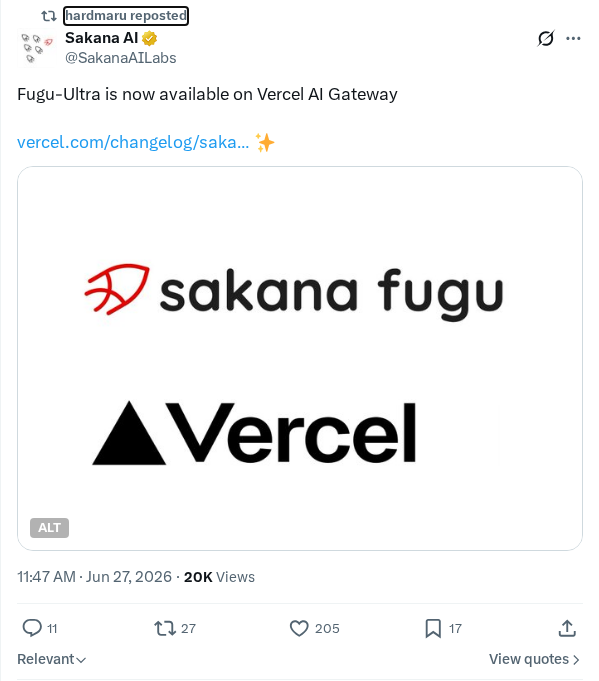
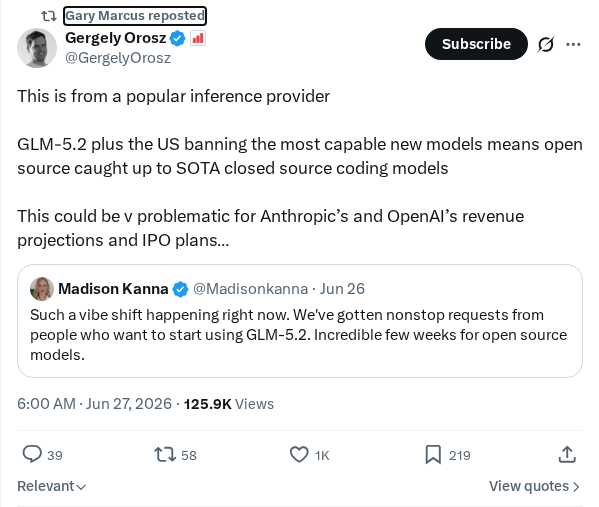
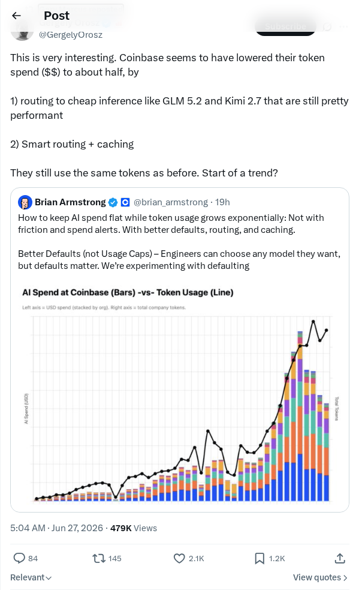
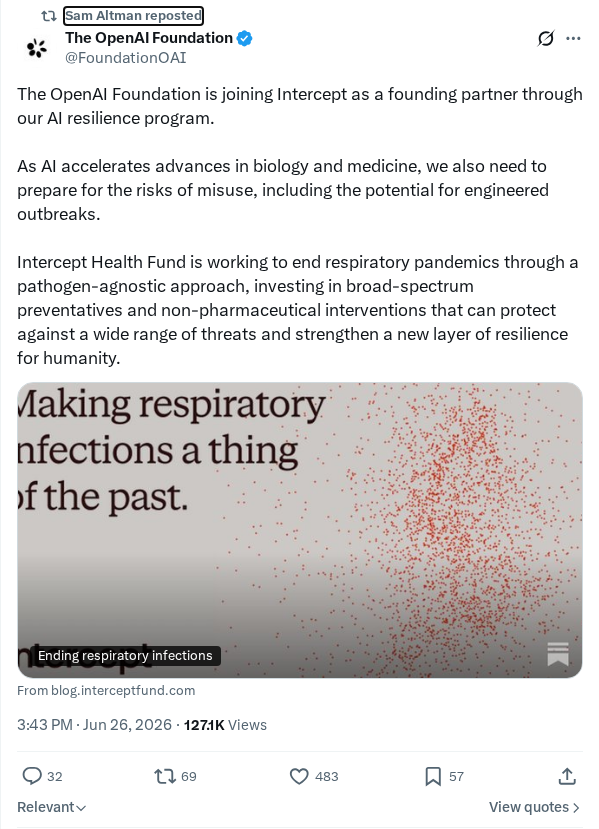
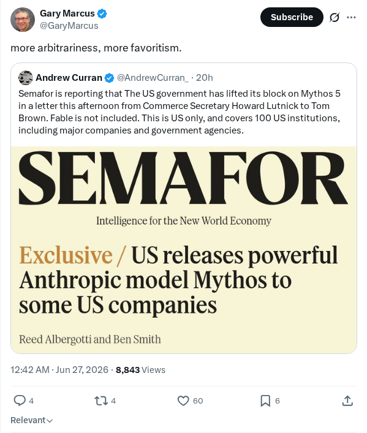
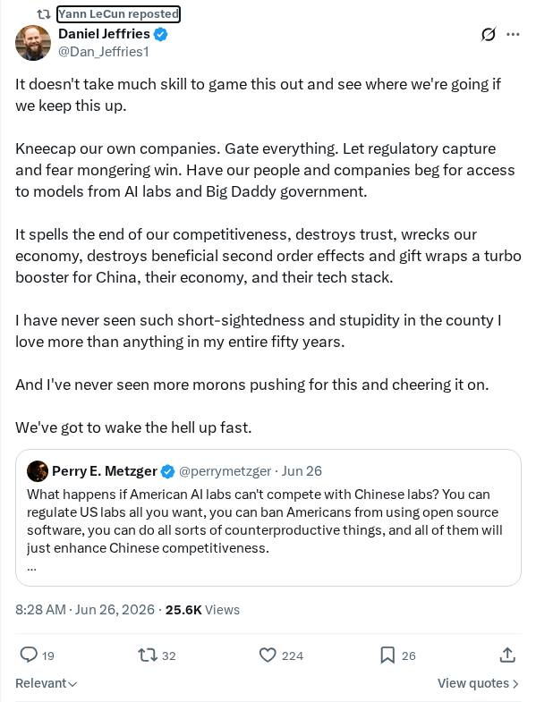

DSpark：利用投机采样加速大模型（LLM）推理 [pdf]
DeepSeek 推出了 DSpark 框架，这是一种旨在通过投机采样加速大型语言模型（LLM）推理的系统。该方法利用一个更小、更快的草稿模型来提议潜在的 token，随后由主目标模型并行验证，从而提高文本生成速度。DSpark 框架优化了协作策略并解决了关键的系统瓶颈，以降低延迟并提高在现实高并发生产环境中的吞吐量。该发布引起了社区的极大关注，在 Hacker News 上获得了超过 600 点的互动。
AI 前沿资讯、研究与趋势精选
DeepSeek 推出了 DSpark 框架，这是一种旨在通过投机采样加速大型语言模型（LLM）推理的系统。该方法利用一个更小、更快的草稿模型来提议潜在的 token，随后由主目标模型并行验证，从而提高文本生成速度。DSpark 框架优化了协作策略并解决了关键的系统瓶颈，以降低延迟并提高在现实高并发生产环境中的吞吐量。该发布引起了社区的极大关注，在 Hacker News 上获得了超过 600 点的互动。
Anthropic 已获得美国政府的正式授权，可为特定专注于关键基础设施防御的美国组织重新部署其 Mythos 5 网络安全模型。此项监管批准是在 6 月 12 日针对 Mythos 5 和 Fable 5 模型启动的协作咨询程序之后做出的。虽然 Mythos 5 已正式获准定向推广，但报告和行业猜测显示，对 Fable 5 模型的限制也可能很快解除，这反映了在高级基础模型监管方面的重大政策转变。

Sakana AI 发布了 Fugu-Ultra，这是一个直接与 Vercel AI Gateway 集成的高性能生成式模型框架。此次发布简化了 Vercel 云基础设施上的模型部署和 API 管理，使开发者能够高效扩展应用程序并管理模型路由。此次合作使现代 Web 开发人员无需进行复杂的配置，即可在生产环境中顺畅访问专门的大型语言模型。鼓励开发者基于该新框架进行构建和原型设计，以探索其性能优势。
MiniMax 与上海国际电影节（SIFF）联合举办了一场 6 小时的 AI 电影制作挑战赛，创作者余熙和李哲岩制作了名为《机器人的心跳》的短片。该作品展示了 MiniMax 的海螺（Hailuo）生成式视频平台在紧张的时间限制下合成高质量视觉叙事的能力。此次挑战突显了生成式视频工具在创意叙事中的实际效用，展示了现代模型如何协助电影制作人进行复杂项目的构思与执行，代表了人工智能与电影制作融合的一大进步。

美国的地理政治出口限制对全球开源人工智能的发展引起了重大关注。随着 GLM-5.2 等高级推理提供商的出现，专家警告称，限制对顶级硬件和软件的获取可能会阻碍国际开源进步与合作。政策讨论突显了国家安全考量与高度强大的前沿 AI 模型公开可用性之间的日益冲突，可能使竞争格局转向国内专有系统。

Coinbase 通过一种新的基础设施优化策略，将其基于 token 的支出降低了约 50%。该方法核心在于智能路由协议，将模型查询导向成本效益更高的端点。这一工程改进解决了企业环境中 LLM 大规模 token 消耗相关的高额运营成本问题。此次转型表明，结构化的路由可以在不牺牲系统性能或稳定性的情况下实现显著的经济节约，标志着行业向成本感知型模型部署的发展趋势。

OpenAI 基金会宣布成为致力于增强 AI 韧性的倡议——Intercept 的创始合作伙伴。该合作将专注于构建强大的基础设施和安全框架，以应对人工智能快速发展所带来的复杂性。通过加入 Intercept 计划，OpenAI 基金会旨在支持技术安全、稳定的基础以及高级机器智能在全球系统中的更安全集成。

Gary Marcus 发出批评，针对当前人工智能发展轨迹，对日益增长的系统性随意性和偏袒现象表示关切。Marcus 强调，缺乏透明、标准化的决策机制以及 AI 治理中存在的优待行为损害了该领域的完整性。他呼吁行业从业者和政策制定者实施客观的评估指标，并优先考虑公平性，以确保社会范围内的公平发展。

Yann LeCun 对科技行业激进的监管趋势所带来的经济影响表示担忧。LeCun 认为，过度的限制有可能阻碍本土科技企业发展，限制创新，并削弱国家竞争力。评论强调了平衡监管的必要性，应避免扼杀行业增长，也不要对全球市场中的本土科技企业造成长期战略性损害。